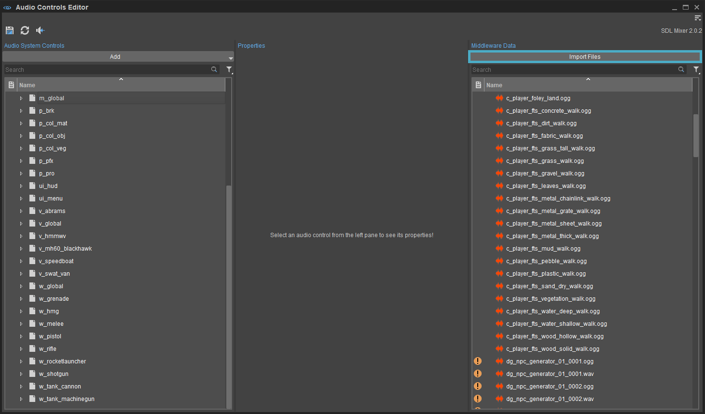
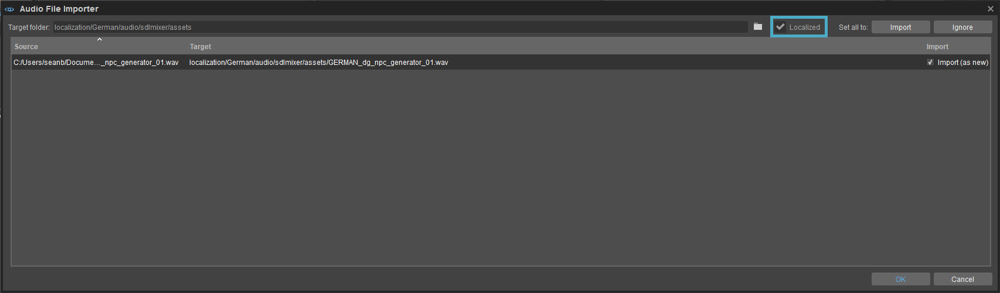
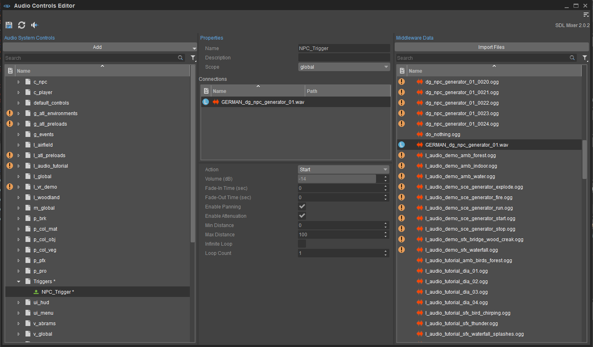
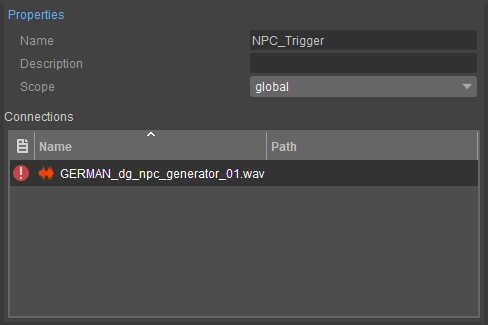

Обзор
Реализация звука на основе микшера CRYENGINE от CRYENGINE предоставляет простой интерфейс для импорта аудиофайлов на разных языках с помощью Редактор управления звуком и редактор командной строки, Консоль.
В то время как ACE позволяет импортировать локализованные звуковые файлы с диска в каталог аудиоресурсов проекта, CVar g_languageAudio помогает указать язык, которому соответствует локализованный аудиофайл при импорте в проект.
Значение CVar по умолчанию: английский, и он может принимать любое пользовательское значение, соответствующее языку локализации, т. е. немецкий, французский, финский или типа того.
Переключение между этими значениями позволяет переключение между языковыми версиями локализованных аудиофайлов в редакторе, как описано на этой странице.
Импорт локализованных аудиофайлов
Аудиофайлы импортируются в аудиосистему CRYENGINE с помощью редактора управления звуком, доступ к которому осуществляется через Инструменты -> Редактор управления звуком опция в строке главного меню.
В редакторе элементов управления звуком щелкните значок Импортировать файлы Кнопка в верхней части панели данных промежуточного программного обеспечения открывает Импортировать аудиофайлы окно, позволяющее пользователям находить и импортировать аудиофайлы с диска.
Аудиофайлы также можно импортировать, перетащив их на панель «Данные промежуточного программного обеспечения» с диска или щелкнув правой кнопкой мыши на панели «Данные промежуточного программного обеспечения» и выбрав Импортировать файлы вариант.

Импортировать файлы
Типы файлов, поддерживаемые Импортировать файлы опция включает MP3 Audio (.mp3), Огг Ворбис (.ogg) и Microsoft Wave (.wav) только.
Указание языка импортируемых аудиофайлов
При выборе нужных аудиофайлов с диска впоследствии открывается импортер аудиофайлов. окно с возможностью указать, локализованы ли импортированные файлы или нет.
Проверьте Локализованный коробка помимо Целевая папка поле, если импортированный аудиофайл локализован/доступен на других языках.

Локализованный флажок
В зависимости от настройки языка, заданной g_languageAudio CVar, импортер аудиофайлов пытается сохранить импортированный файл в локализация каталог проекта в папке с тем же именем, что и значение CVar.
Например, поскольку значение g_languageAudio было установлено на немецкий, импортер аудиофайлов пытается сохранить импортированный .wav файл под локализация/немецкий/audio/sdlmixer/активы в каталоге проекта на изображении выше.
Если папка, соответствующая языковому значению g_languageAudio CVar не существует, новый будет создан импортером аудиофайлов.
В любом случае. место сохранения импортированных аудиофайлов можно изменить или создать новую папку, щелкнув значок рядом с Целевая папка поле. 
Импортированный файл затем можно связать с новым или ранее созданным звуковым триггером через панели «Элементы управления аудиосистемой» и «Свойства».
Подключение импортированных аудиофайлов к аудио-триггеру
После импорта аудиофайл можно связать с ранее созданным аудиотриггером на панели управления аудиосистемой.
Чтобы подключить импортированный аудиофайл к ранее созданному аудио-триггеру, выберите триггер на панели «Элементы управления аудиосистемой», а затем перетащите аудиофайл с панели «Данные промежуточного программного обеспечения» в раздел «Подключения» на панели «Свойства».

Соединения
Затем аудио триггеры можно связать с компонентами аудио триггеров и аудио объекты такие как «Объект аудиообласти», «Случайная аудиообласть» и «Точка запуска аудио» в окне просмотра.
Импорт разных языковых версий одного и того же аудиофайла
После импорта аудиофайла его альтернативные языковые версии можно импортировать, изменив значение g_languageAudio.
В случае примера, приведенного в предыдущем разделе, изменение значения g_languageAudio из немецкий чтобы английский приведет к тому, что окно «Импорт аудиофайлов» попытается сохранить все впоследствии импортированные файлы в папке локализация/английский/audio/sdlmixer/активы в каталоге проекта когда Локализованный флажок установлен.
Следовательно, ранее импортированные версии локализованного аудиофайла на языках, отличных от английского, больше не будут отображаться на панели «Данные промежуточного программного обеспечения».
Если язык аудиофайла, связанного с триггером, не соответствует значению языка, указанному в g_languageAudio, а

Недоступный аудиофайл
После импорта эти альтернативные языковые версии одного и того же аудиофайла также можно связать с триггерами на панели управления аудиосистемой, как описано выше.
Переключение между различными языковыми версиями аудиофайла в окне просмотра
Когда к одному и тому же триггеру подключены несколько языковых версий одного и того же аудиофайла, пользователи могут переключаться между разными языками в окне просмотра, просто изменяя значение параметра g_languageAudio CVar из консоли.
Пример использования
Рассмотрим аудиофайл на немецком языке. GERMAN_dg_npc_generator_01.wav (импортировано с g_languageAudio=Немецкий) и его англоязычная версия ENGLISH_dg_npc_generator_01_001.wav (импортировано с g_languageAudio=Английский), оба из которых подключены к звуковому триггеру NPC_Trigger.
Когда это NPC_Trigger связан с аудиообъектом Audio Area Ambience или Audio Area Random, который может быть прикреплен к Форма области в окне просмотра пользователи могут указать, какой язык dg_npc_generator_01.wav аудиофайл воспроизводится, когда игрок входит в фигуру области by меняя значение g_languageAudio.
Настройка g_languageAudio чтобы немецкий через консоль, например, вызовет только German_dg_npc_generator_01.wav файл, который будет запущен в пределах определенной формы области.